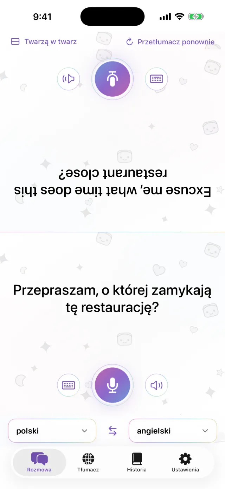
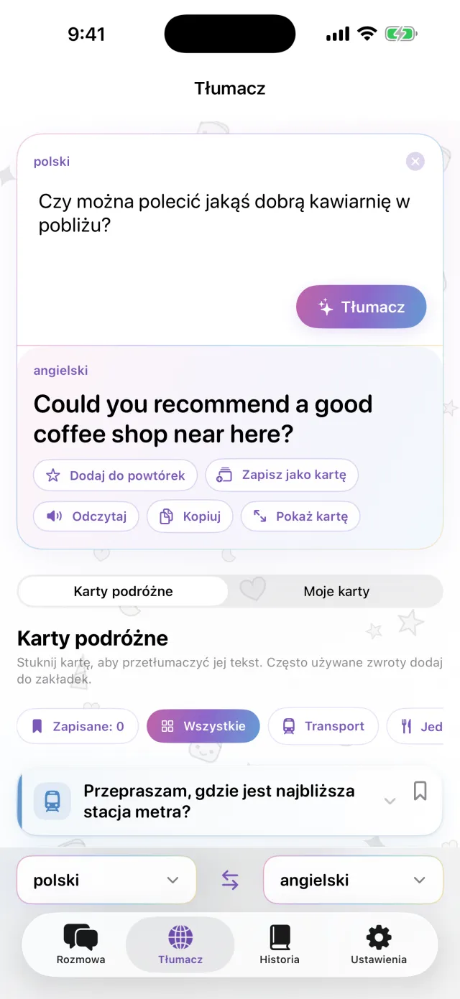
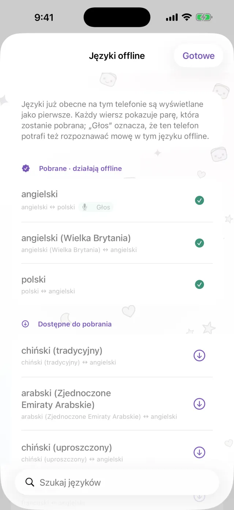
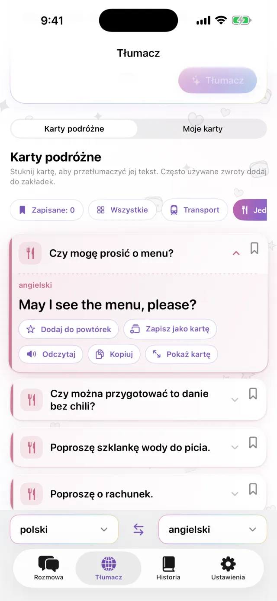
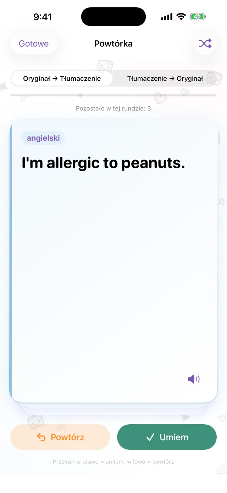

Tłumacz na iPhone’a
Tłumacz na iPhone’a
Połóż iPhone’a między wami.
I już.
Dotknij mikrofonu i mów. Tłumaczenie pojawi się na drugiej połowie ekranu, zwróconej do rozmówcy. Gdy ktoś odpowiada, działa to tak samo. Pobierz języki wcześniej, a aplikacja będzie działać bez internetu.
Wkrótce w App Store- Około 20 języków
- Offline po pobraniu
- Bez rejestracji

Pisanie
Nie możesz mówić na głos? Napisz.
W cichym miejscu albo gdy rozmówca mówi za szybko, po prostu wpisz tekst. Tłumaczenie można powiększyć na cały ekran i pokazać drugiej osobie.
- Skopiuj tekst lub odsłuchaj go na głos
- Zamień oba języki jednym dotknięciem

Offline
Bez internetu też tłumaczy
Tłumaczenie, rozpoznawanie mowy i czytanie na głos działają na iPhonie. Pobierz potrzebne języki przed wyjazdem, a aplikacja zadziała w samolocie albo zanim kupisz kartę SIM. To, co mówisz, nie jest wysyłane na serwer, a nagrania nie są zachowywane.

Karty z frazami
Zapisz to, co mówisz za każdym razem
Adres hotelu, alergia pokarmowa, stacja, której szukasz. Zapisz to jako karty i nie musisz wpisywać tego ponownie. Dotknij karty, a tekst zostanie przetłumaczony na język rozmówcy. W aplikacji są gotowe karty o transporcie, jedzeniu, noclegach i zakupach.

Pro
Powtarzaj zapisane zdania w odpowiednim czasie
Dotknij gwiazdki przy zdaniu, aby zapisać je do powtórki. Jeśli je pamiętasz, wróci po 1, 3, 7, 14 i 30 dniach. Jeśli nie, zobaczysz je ponownie tego samego dnia. Możesz uczyć się od oryginału do tłumaczenia albo odwrotnie. Ta funkcja jest dostępna w wersji Pro.

Przydaje się, gdy
- zamawiasz jedzenie w małej restauracji
- podajesz taksówkarzowi adres
- tłumaczysz w aptece, na co jesteś uczulony
- zostawiasz bagaże w recepcji hotelu
- pytasz o drogę
Zobacz w 30 sekund
W tym filmie włączony jest tryb samolotowy.
Najważniejsze informacje
| Języki | Około 20 (języki, które Apple tłumaczy na urządzeniu) |
|---|---|
| Offline | Tak, po pobraniu języków |
| Wprowadzanie głosowe | Tak. Część języków obsługuje tylko pisanie |
| Konto | Niepotrzebne |
| Cena | Bezpłatnie. Pro jest dodatkowo płatne (patrz niżej) |
| Wymagania | iPhone z iOS 18 lub nowszym |
- Za pierwszym razem potrzebujesz internetu, aby pobrać języki.
- Ceny są wyświetlane w App Store w Twojej lokalnej walucie.
Bezpłatna wersja i Pro
Bezpłatna
- Rozmowa twarzą w twarz
- Pisanie i wyświetlanie na całym ekranie
- Tłumaczenie offline
- Karty podróżne i 3 własne karty
- Mały baner reklamowy
Pro
- Bez reklam
- Dowolna liczba kart
- Historia tłumaczeń i powtórki w odpowiednim czasie
Tygodniowo, miesięcznie lub jednorazowy zakup.
Przed wyjazdem pobierz języki.
Wkrótce w App StoreiPhone · iOS 18 lub nowszy · Bezpłatne pobieranie · Jak działa każdy ekran